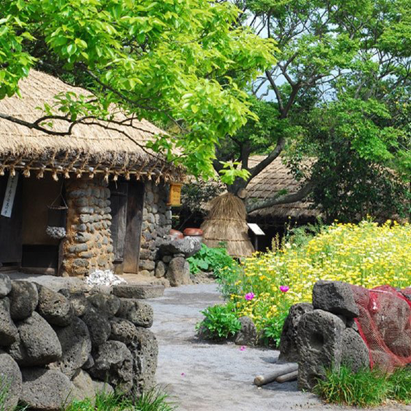
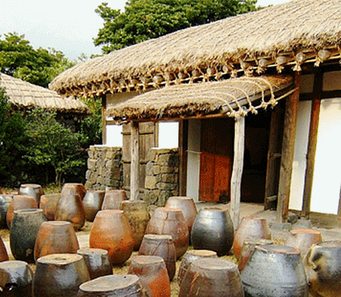
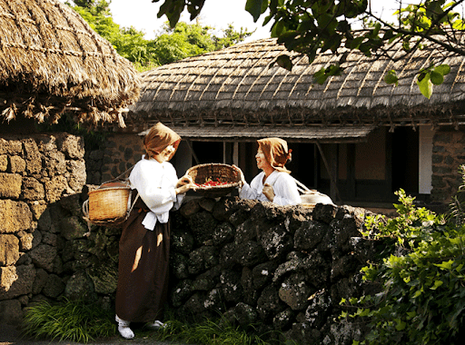
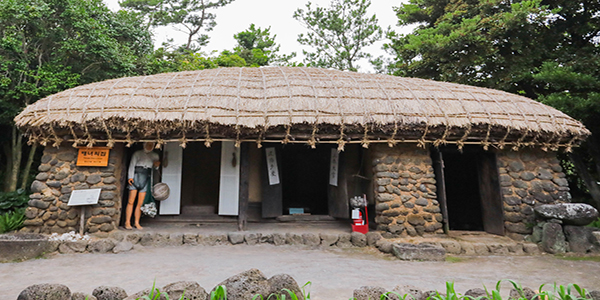
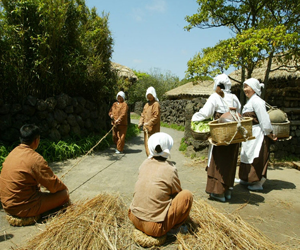
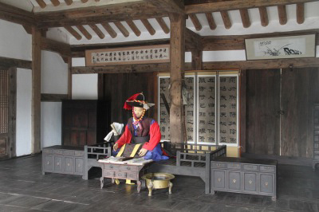

HOME > 홍보센터 > 제주민속촌
제주민속촌

제주민속촌은 옛 문화와 역사를 원형 그대로 생생하게 되살려 놓은 제주에서 가장 제주다운 곳입니다.
또한 제주의 향토 수종과 야생화를 비롯하여 사계절 꽃이 피어나는 아름다운 정원입니다.
-

- 산촌
- 해발 300미터 이상의 준평원 지대에 형성되어 있으며 반농반목(半農半牧)의 생활 형태를 보인다.
-

- 중산간촌
- 해발 100미터에서 300미터 사이에 분포되어 있는 구릉 평야지역으로 농업 위주의 생활을 했으며, 과거 문화·행정의 중심지였다.
-

- 어촌
- 해발 100미터 이하 해안의 자연 용출수를 중심으로 마을이 형성된 곳으로, 이곳 어촌 주민의 주 생업은 반농반어(半農半漁)에 가까운 어업이라고 할 수 있다.
-

- 토속신앙촌
- 섬 전체에 남아있는 다양한 민간신앙의 자취를 확인할 수 있는 곳으로, 심방집을 비롯하여 처녀당, 포제단, 미륵당, 해신당, 본향당 등이 있다.
-

- 제주영문(관아)
- 조선시대 제주목(濟州牧)의 관아를 제주영문(濟州榮問) 이라 한다.